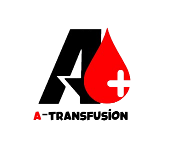

|  🩸CHU Fès | Gestion des Demandes | Accueil | À propos | Contact |
|
Simplifiez la coordination et assurez la disponibilité du sang pour vos patients en quelques clic |
|
|
Facilitez la connexion entre les hôpitaux et le centre de sang pour un approvisionnement rapide et sécurisé. |
|